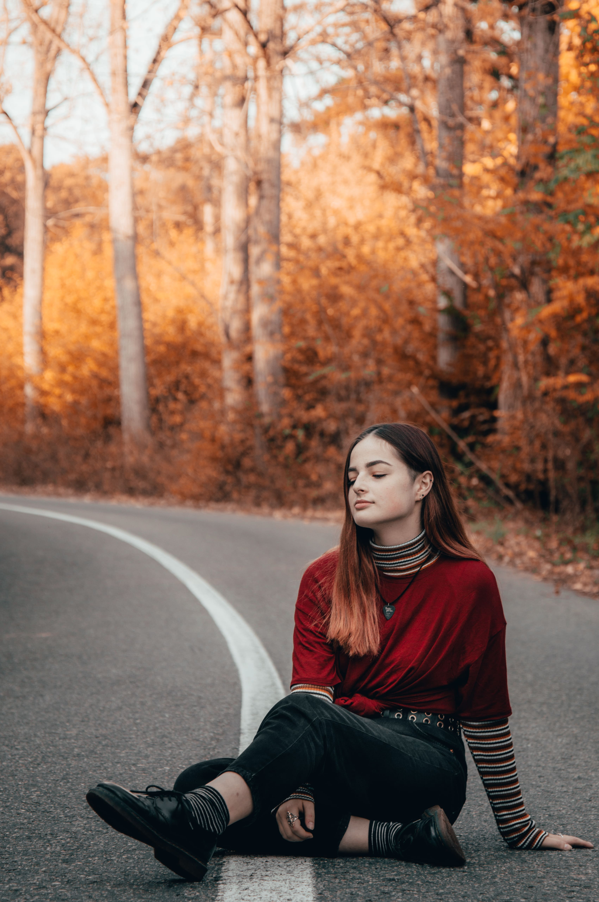

Porték

Gólyabál

Bál
A rendezvényfotózás ugyan stresszes, de nagyon pozitív is lehet, rengeteg embert meg lehet ismerni. Nagyon szerencsés vagyok hogy csodálatos embereket ismertem meg a rendezvények alatt és hogy velük közösen dolgozhattam.